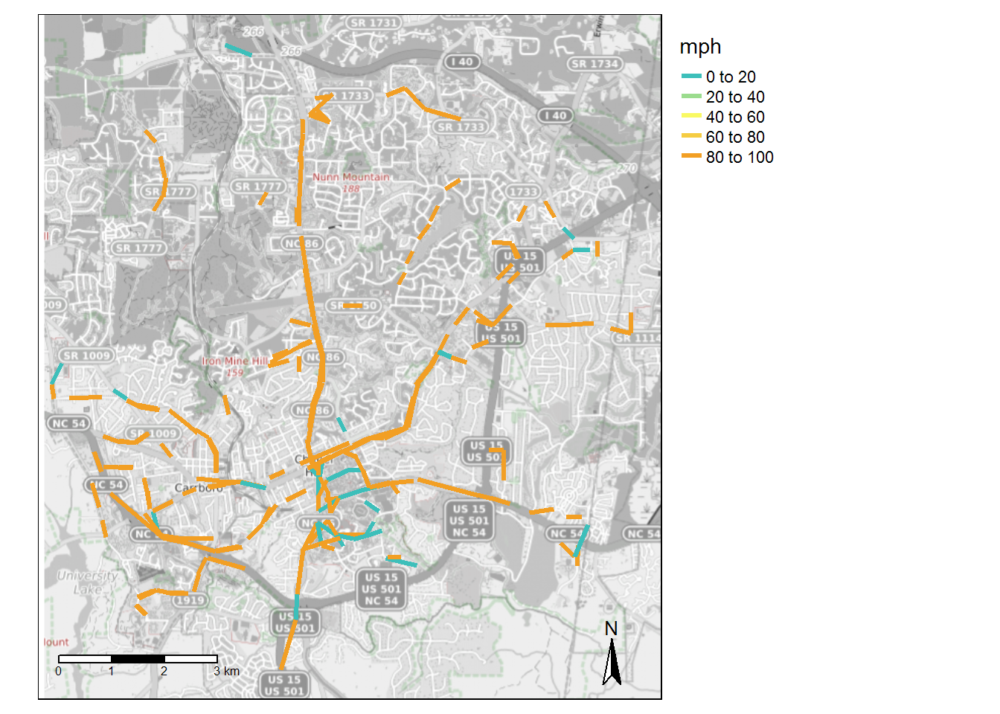
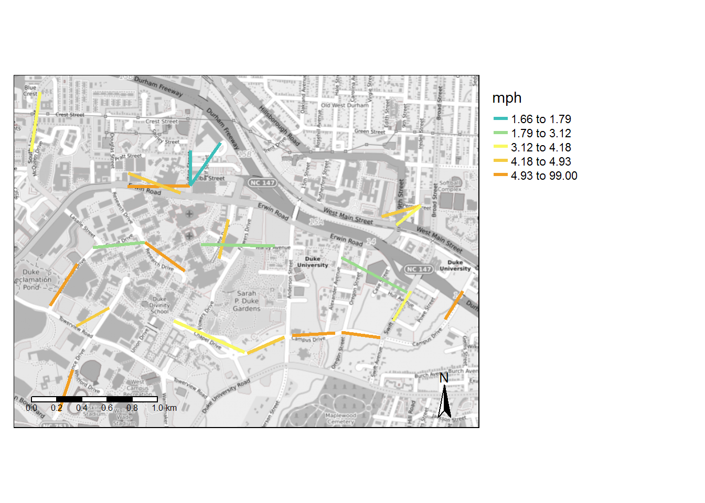
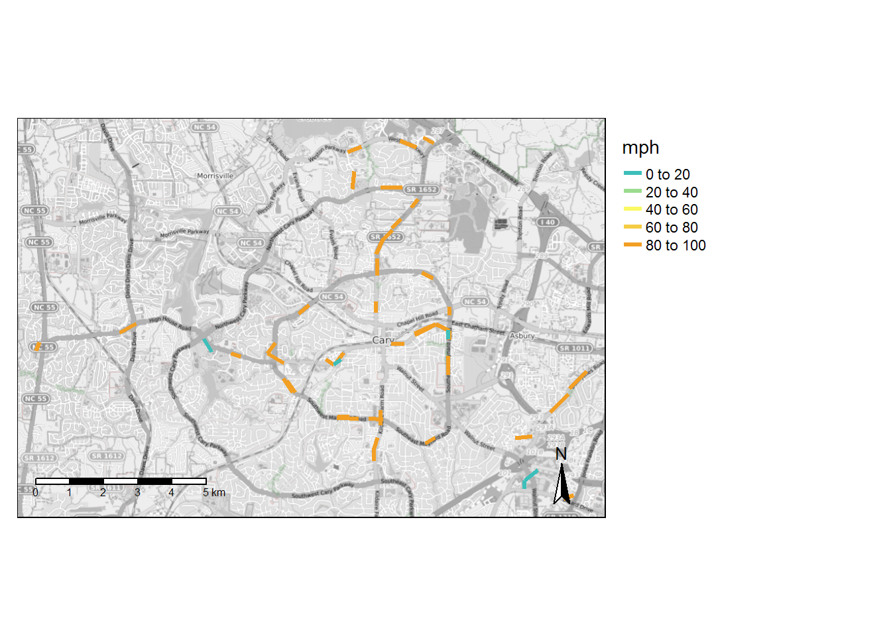
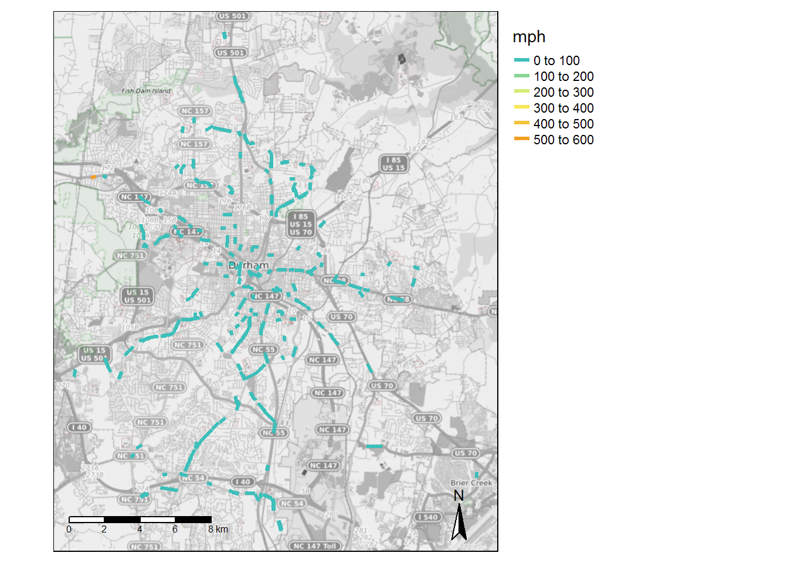
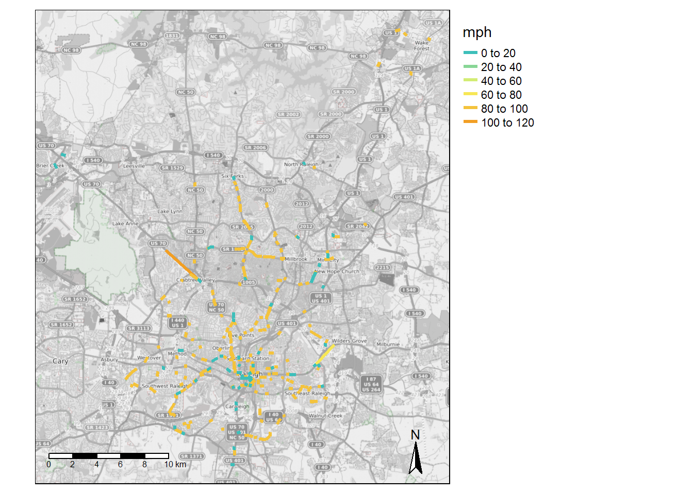
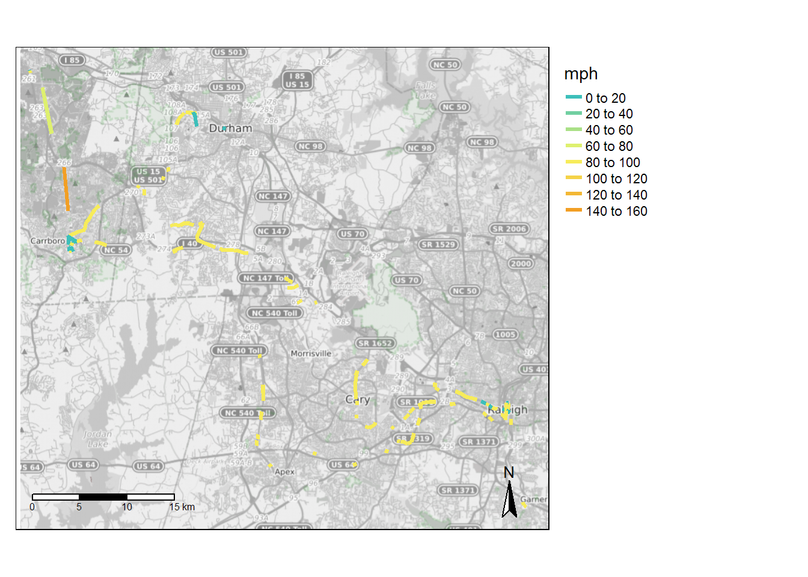
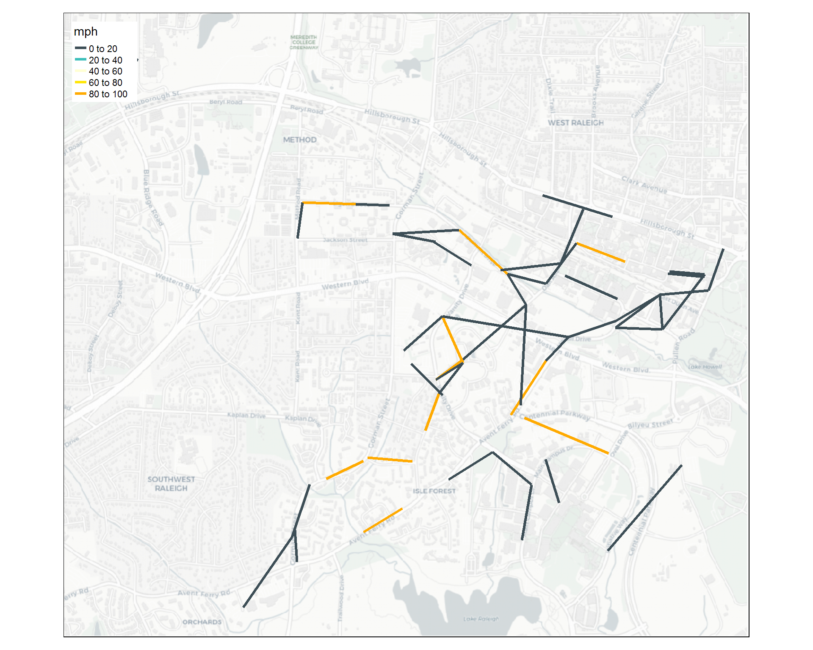

The service speed analysis findings reported on this page report unusually high and low transit speeds between stop-to-stop pairs. Transit times are calculated based on all stop-to-stop pairs in the schedule. Distance is computed based on straight-line distance between stop pairs Therefore, speeds reported here can be viewed as the minimum speed necessary to complete the segment. The purpose of these tests is to identify potentially unrealistic scheduling times that would impact a transit analysis.
 *Infinite values represented as 99 in map.
| route name | miles > 60 mph |
|---|---|
| Colony Woods - Franklin Street - McDougle School | 7.05 |
| MLK Jr Boulevard-UNC Hospitals | 6.80 |
| Eubanks Road-Southern Village | 4.72 |
| Carrboro-Merritt Mill Road-Family Medicine | 2.99 |
| Carrboro-Downtown Chapel Hill-Jones Ferry Road | 2.42 |
| Colony Lake - Sage Rd - UNC Hospitals | 2.35 |
| Culbreth Road - Franklin Street - Eastowne | 2.34 |
| Carrboro - Weaver Street | 2.29 |
| Booker Creek-University Place-UNC Hospitals | 2.25 |
| Franklin Street-Finley Forest-Meadowmont | 1.74 |
| Estes Park-UNC Hospitals-Jones Ferry Road | 1.50 |
| Southern Village - Meadowmont | 1.46 |
| Franklin Street-Carrboro-Rock Haven Road | 1.29 |
| Franklin Street-MLK Jr Boulevard-Timberlyne | 1.29 |
| MLK Jr Blvd - Northside | 0.94 |
| Greenbridge - University Place - Eastowne | 0.92 |
| Jones Ferry Road Express | 0.89 |
| RR Lot-UNC Hospitals | 0.72 |
| Morris Grove Elementary-Chapel Hill High-Rogers Rd | 0.70 |
| Franklin St-University Place-Colony Woods | 0.69 |
| Southern Village-Meadowmont | 0.47 |
| Campus Reverse Shuttle-Law School | 0.43 |
| Friday Center Express | 0.30 |
| South Campus-NC 54 Park-&-Ride | 0.30 |
| Chatham County Express | 0.28 |
| Estes Park-UNC Hospitals-Family Medicine | 0.26 |
| UNC Hospitals-Botanical Garden-54 Park and Ride-Hendrick Building | 0.20 |
| Baity Hill - UNC Hospitals - Fetzer Gym | 0.14 |
| route name | miles < 5 mph |
|---|---|
| Eubanks Road-Southern Village | 1.33 |
| Colony Woods - Franklin Street - McDougle School | 1.24 |
| MLK Jr Blvd - Northside | 0.94 |
| Carrboro-Downtown Chapel Hill-Jones Ferry Road | 0.87 |
| Chatham County Express | 0.81 |
| Southern Village-Meadowmont | 0.80 |
| MLK Jr Boulevard-UNC Hospitals | 0.79 |
| Booker Creek-University Place-UNC Hospitals | 0.68 |
| RR Lot-UNC Hospitals | 0.63 |
| Colony Lake - Sage Rd - UNC Hospitals | 0.61 |
| Culbreth Road - Franklin Street - Eastowne | 0.61 |
| Southern Village - Meadowmont | 0.50 |
| Carrboro-Merritt Mill Road-Family Medicine | 0.46 |
| UNC Campus Shuttle-Downtown | 0.44 |
| Campus Reverse Shuttle-Law School | 0.36 |
| Baity Hill - UNC Hospitals - Fetzer Gym | 0.32 |
| Estes Park-UNC Hospitals-Jones Ferry Road | 0.31 |
| Estes Park-UNC Hospitals-Family Medicine | 0.16 |
| Carrboro Plaza Express | 0.15 |
| Jones Ferry Road Express | 0.15 |
| Carrboro - Weaver Street | 0.14 |
| South Campus-NC 54 Park-&-Ride | 0.14 |
| Franklin St-University Place-Colony Woods | 0.13 |
| from_stop_name | to_stop_name | route_id | route_long_name | max_mph | max_distance_miles | trips |
|---|---|---|---|---|---|---|
| Carol Woods | Weaver Dairy Rd at Steeplechase Rd | 1750 | MLK Jr Boulevard-UNC Hospitals | Inf | 0.27 | 48 |
| Carol Woods | Weaver Dairy Rd at Steeplechase Rd | 1751 | MLK Jr Boulevard-UNC Hospitals | Inf | 0.27 | 16 |
| E Franklin St at Carolina Ave | E Franklin St at N Boundary St (WB) | 1732 | Colony Woods - Franklin Street - McDougle School | Inf | 0.39 | 6 |
| E Franklin St at Davie Cir | E Franklin St at Howell Ln (EB) | 1732 | Colony Woods - Franklin Street - McDougle School | Inf | 0.28 | 8 |
| E Franklin St at Howell Ln (WB) | E Franklin St at Carolina Ave | 1732 | Colony Woods - Franklin Street - McDougle School | Inf | 0.31 | 46 |
| Elliott Rd at Burger King | Ephesus Church Rd at Legion Rd (University Inn) | 1732 | Colony Woods - Franklin Street - McDougle School | Inf | 0.27 | 43 |
| Jones Ferry Rd at Alabama Ave | NC 54 East at Westbrook Dr | 1738 | Carrboro-Downtown Chapel Hill-Jones Ferry Road | Inf | 0.30 | 26 |
| Manning Dr at Public Safety | Manning Dr at UNC Hospitals (CG Lot) | 1724 | Chatham County Express | Inf | 0.28 | 42 |
| Martin Luther King Jr Blvd at Airport Gardens Apts | Martin Luther King Jr Blvd at Umstead Dr | 1750 | MLK Jr Boulevard-UNC Hospitals | Inf | 0.29 | 44 |
| Martin Luther King Jr Blvd at Homestead Rd (NB) | Martin Luther King Jr Blvd at Stateside Dr (NB) | 1742 | Eubanks Road-Southern Village | Inf | 0.39 | 152 |
| Martin Luther King Jr Blvd at Riggsbee Mobile Home Park (SB) | Martin Luther King Jr Blvd at Stateside Dr (SB) | 1742 | Eubanks Road-Southern Village | Inf | 0.28 | 256 |
| Martin Luther King Jr Blvd at Shadowood Ct (NB) | Martin Luther King Jr Blvd at Timber Hollow (NB) | 1742 | Eubanks Road-Southern Village | Inf | 0.30 | 152 |
| Martin Luther King Jr Blvd at Shadowood Ct (NB) | Martin Luther King Jr Blvd at Timber Hollow (NB) | 1749 | Franklin Street-MLK Jr Boulevard-Timberlyne | Inf | 0.30 | 10 |
| Martin Luther King Jr Blvd at Taylor St (Citgo) | Martin Luther King Jr Blvd at Homestead Rd (NB) | 1750 | MLK Jr Boulevard-UNC Hospitals | Inf | 0.28 | 28 |
| Merritt Mill Rd at S Greenboro St | Merritt Mill Rd at Manley Estates | 1726 | Carrboro-Merritt Mill Road-Family Medicine | Inf | 0.26 | 80 |
| NC 54 at Harris Inc (Fenway Park) | NC 54 East at Westbrook Dr | 1726 | Carrboro-Merritt Mill Road-Family Medicine | Inf | 0.66 | 60 |
| NC 54 East at Canterbury Apts | Merritt Mill Rd at S Greenboro St | 1726 | Carrboro-Merritt Mill Road-Family Medicine | Inf | 0.27 | 44 |
| Pittsboro St at University Dr | S Columbia St at Westwood Dr | 1740 | Estes Park-UNC Hospitals-Jones Ferry Road | Inf | 0.29 | 36 |
| Raleigh Rd at Greenwood Rd (WB) | Raleigh Rd at St Thomas More (WB) | 6830 | Southern Village - Meadowmont | Inf | 0.33 | 40 |
| S Columbia St at Mason Farm Rd | S Columbia St at Health Sciences Library | 1739 | Jones Ferry Road Express | Inf | 0.28 | 4 |
| S Columbia St at Westwood Dr | S Columbia St at Purefoy Rd | 1742 | Eubanks Road-Southern Village | Inf | 0.44 | 32 |
| S Greensboro St at Rocky Brook Trailer Court | NC 54 West at Royal Park | 1738 | Carrboro-Downtown Chapel Hill-Jones Ferry Road | Inf | 0.30 | 26 |
| Smith Level Rd at FPG School | NC 54 East at Kingswood | 1740 | Estes Park-UNC Hospitals-Jones Ferry Road | Inf | 0.37 | 36 |
| US 15-501 South at Culbreth Rd | US 15-501 South at Bennett Rd | 1742 | Eubanks Road-Southern Village | Inf | 0.49 | 32 |
| W Rosemary St at Pritchard Ave | Hillsborough St at E Rosemary St | 1748 | Franklin Street-Carrboro-Rock Haven Road | Inf | 0.51 | 10 |
| Weaver Dairy Rd at Steeplechase Rd | East Chapel Hill High School | 1750 | MLK Jr Boulevard-UNC Hospitals | Inf | 0.36 | 76 |
| Weaver Dairy Rd at Vilcom Campus | Westminster Dr at Martin Luther King Jr Blvd (EB) | 1750 | MLK Jr Boulevard-UNC Hospitals | Inf | 0.30 | 36 |
| Weiner St at Barclay Rd | Barclay Rd at Williams Circle (EB) | 1751 | MLK Jr Boulevard-UNC Hospitals | Inf | 0.31 | 24 |
| Bowles Dr at Smith Center (EB) | Manning Lot at Family Practice Building | 1726 | Carrboro-Merritt Mill Road-Family Medicine | 4.50 | 0.30 | 60 |
| Eubanks Rd at Northwood Dr | Eubanks Rd Park-and-Ride Lot | 1742 | Eubanks Road-Southern Village | 4.07 | 0.27 | 8 |
| Pittsboro St at University Dr | Manning Dr at Hospital Parking Deck | 1742 | Eubanks Road-Southern Village | 3.94 | 0.26 | 72 |
| Friday Center Dr at Park-and-Ride Driveway | Meadowmont Ln at Village Crossing Dr | 1753 | Southern Village-Meadowmont | 3.93 | 0.33 | 64 |
| South Rd at Fetzer Gym | South Rd at Country Club Rd (EB) | 1724 | Chatham County Express | 2.93 | 0.29 | 42 |
 *Infinite values represented as 99 in map.
| route name | miles > 60 mph |
|---|---|
| East-Science | 0.64 |
| East-West | 0.45 |
| Remote Lot-Hospital | 0.45 |
| LaSalle Loop | 0.20 |
| East-West-Smith Warehouse | 0.13 |
| route name | miles < 5 mph |
|---|---|
| Hospital Loop | 0.67 |
| Broad-Erwin | 0.51 |
| LaSalle Loop | 0.45 |
| Bassett-Research | 0.36 |
| East-West | 0.31 |
| Swift Avenue Shuttle | 0.30 |
| East-Science | 0.16 |
| Class Change | 0.14 |
| Remote Lot-Hospital | 0.14 |
| from_stop_name | to_stop_name | route_id | route_long_name | max_mph | max_distance_miles | trips |
|---|---|---|---|---|---|---|
| Campus Dr at Chapel Circle (Admissions) | West Campus Chapel | 1693 | East-West | 3.69 | 0.31 | 59 |
| Alexander Ave at Pace St (Ubuntu House) | Swift Ave at 300 Swift Apts | 13048 | Swift Avenue Shuttle | 2.99 | 0.30 | 44 |
| Duke Medical Pavilion/Cancer Ctr | Yearby Ave at H Lot (Westbound) | 1683 | Hospital Loop | 2.54 | 0.30 | 28 |
 *Infinite values represented as 99 in map.
| route name | miles > 60 mph |
|---|---|
| Harrison Avenue | 2.50 |
| Buck Jones Road | 2.22 |
| Maynard Road (Clockwise) | 1.65 |
| High House Road | 1.20 |
| Maynard Rd (Counterclockwise) | 1.15 |
| Kildaire Farm Road | 0.58 |
| route name | miles < 5 mph |
|---|---|
| High House Road | 0.37 |
| Maynard Rd (Counterclockwise) | 0.24 |
| Buck Jones Road | 0.14 |
| Maynard Road (Clockwise) | 0.14 |
| from_stop_name | to_stop_name | route_id | route_long_name | max_mph | max_distance_miles | trips |
|---|---|---|---|---|---|---|
| Buck Jones Rd at Farm Gate Rd (EB) | Buck Jones Rd at Bashford Rd | 1722 | Buck Jones Road | Inf | 0.38 | 100 |
| Buck Jones Rd at Orchard St | Buck Jones Rd at Barclay Dr (WB) | 1722 | Buck Jones Road | Inf | 0.36 | 100 |
| E Chatham St at Circle Dr (Urban Park) | E Chatham St at Reedy Creek Rd | 1722 | Buck Jones Road | Inf | 0.27 | 100 |
| E Chatham St at NE Maynard Rd (WB) | E Chatham St at Ward St (Urban Park) | 1722 | Buck Jones Road | Inf | 0.35 | 100 |
| Harrison Ave at NE Maynard Rd (NB) | N Harrison Ave at Harrison Point Shopping Center | 1719 | Harrison Avenue | Inf | 0.26 | 102 |
| High House Rd at Cornerstone Dr | High House Rd at Davis Dr (EB) | 1720 | High House Road | Inf | 0.28 | 100 |
| Maynard Crossing at Kroger | High House Rd at Edgehill Pky | 1720 | High House Road | Inf | 0.28 | 100 |
| N Harrison Ave at Dynasty Dr (SB) | N Harrison Ave at Harrison Grande Dr | 1719 | Harrison Avenue | Inf | 0.27 | 102 |
| Norwell Blvd at NW Cary Pkwy (North Cary Park) | Norwell Blv at Weston Oaks Ct | 1719 | Harrison Avenue | Inf | 0.26 | 102 |
| SE Maynard Rd at Village Greenway | SE Maynard Rd at Quinard Dr | 1718 | Maynard Rd (Counterclockwise) | Inf | 0.29 | 106 |
| Weston Pkwy at Southhill Dr | Harrison Oaks Blvd at Weston Pkwy | 1719 | Harrison Avenue | Inf | 0.27 | 102 |
 *Infinite values represented as 99 in map.
| route name | miles > 60 mph |
|---|---|
| NCCU - Hwy 54 & 55 | 8.43 |
| South Square - New Hope Commons | 6.60 |
| Fayetteville St-NCCU-Southpoint | 5.51 |
| Dearborn Drive - Durham Regional - Foxfire - Riverview | 4.31 |
| Dearborn Drive - Ben Franklin Boulevard - Northern HS | 3.61 |
| Hwy 54 & 55 - Southpoint | 3.56 |
| Dearborn Drive - Durham Regional - Riverside HS | 3.24 |
| East Durham-Angier Ave | 3.00 |
| Northgate-North Pointe-Croasdaile Crossings-Willowdale | 2.08 |
| Duke & VA - Hillsborough Rd | 2.02 |
| South Square - Pickett Rd | 1.85 |
| The Village - Glenview Station | 1.80 |
| Lawson Street - NCCU - Durham Tech | 1.77 |
| The Village - East Durham Link | 1.76 |
| Fayetteville Street Tripper | 1.75 |
| Northgate-North Pointe-Loehmanns | 1.72 |
| Forest Hills-Weaver Street-MLK Jr Pkwy | 1.55 |
| Duke & VA Hospitals-American Village | 1.46 |
| North Roxboro - North Duke Crossing | 1.46 |
| The Village-Highway 98-Southern High School | 1.43 |
| Duke & VA Hospitals-Sparger Rd | 1.29 |
| Northgate - Guess Road - Willowdale | 1.25 |
| 3Tripper The Village - Glenview Station | 1.17 |
| East Durham-The Village | 0.72 |
| TW Alexander - Brier Creek | 0.62 |
| The Village - Highway 98 - Rummel Street | 0.49 |
| Woodcroft - South Square - Duke & VA Limited | 0.23 |
| Bull City Connector | 0.17 |
| route name | miles < 5 mph |
|---|---|
| The Village - Glenview Station | 0.75 |
| The Village-Highway 98-Southern High School | 0.64 |
| Fayetteville St-NCCU-Southpoint | 0.52 |
| The Village - Highway 98 - Rummel Street | 0.44 |
| NCCU - Hwy 54 & 55 | 0.32 |
| Forest Hills-Weaver Street-MLK Jr Pkwy | 0.29 |
| South Square - New Hope Commons | 0.28 |
| The Village - East Durham Link | 0.23 |
| Lawson Street - NCCU - Durham Tech | 0.22 |
| Duke & VA - Hillsborough Rd | 0.21 |
| Fayetteville Street Tripper | 0.21 |
| Hwy 54 & 55 - Southpoint | 0.16 |
| 3Tripper The Village - Glenview Station | 0.15 |
| Bull City Connector | 0.15 |
| Duke & VA Hospitals-American Village | 0.14 |
| North Roxboro - North Duke Crossing | 0.14 |
| Northgate-North Pointe-Loehmanns | 0.13 |
| from_stop_name | to_stop_name | route_id | route_long_name | max_mph | max_distance_miles | trips |
|---|---|---|---|---|---|---|
| Alston Ave at Cecil St (NCCU) | NC 55 at Dakota St (SB) | 1768 | NCCU - Hwy 54 & 55 | Inf | 0.32 | 135 |
| Alston Ave at Cecil St (NCCU) | NC 55 at Dakota St (SB) | 4731 | NCCU - Hwy 54 & 55 | Inf | 0.32 | 65 |
| Angier Ave at Guthrie Ave (EB) | Angier Ave at Bingham St (EB) | 1778 | East Durham-Angier Ave | Inf | 0.26 | 65 |
| Angier Ave at Midway Ave (EB) | Pleasant Dr at Angier Ave | 1777 | East Durham-Angier Ave | Inf | 0.29 | 70 |
| Briggs Ave at Person St (SB 2) | Briggs Ave at Riddle Rd (SB) | 1786 | Lawson Street - NCCU - Durham Tech | Inf | 0.31 | 70 |
| Club Blvd at Northgate Mall | W Club Blvd at Onslow St (Walltown Park) | 1762 | Northgate-North Pointe-Croasdaile Crossings-Willowdale | Inf | 0.26 | 70 |
| Club Blvd at Northgate Mall | W Club Blvd at Onslow St (Walltown Park) | 1774 | Northgate-North Pointe-Loehmanns | Inf | 0.26 | 65 |
| Club Blvd at Northgate Mall | W Club Blvd at Onslow St (Walltown Park) | 1775 | Northgate - Guess Road - Willowdale | Inf | 0.26 | 65 |
| Durham Chapel Hill Blvd at James St | Durham-Chapel Hill Blvd at Hope Valley Rd (WB) | 1764 | South Square - New Hope Commons | Inf | 0.26 | 65 |
| E Club Blvd at Miriam Cir | E Club Blvd at Glenbrook Dr (SB) | 1787 | Dearborn Drive - Durham Regional - Foxfire - Riverview | Inf | 0.35 | 3 |
| Fayetteville Rd at Geneva Dr (NB) | Fayetteville Rd at Woodcroft Pkwy (NB) | 1782 | Fayetteville St-NCCU-Southpoint | Inf | 0.26 | 66 |
| Fayetteville Rd at Juliette Dr (SB) | Fayetteville Rd at Cook Rd (SB) | 1782 | Fayetteville St-NCCU-Southpoint | Inf | 0.26 | 200 |
| Fayetteville Rd at Obie Dr (NB) | Fayetteville Rd at Cook Rd (NB) | 1782 | Fayetteville St-NCCU-Southpoint | Inf | 0.26 | 130 |
| Fayetteville Rd at United Dr | Fayetteville Rd at MLK Pkwy (NB) | 1782 | Fayetteville St-NCCU-Southpoint | Inf | 0.27 | 196 |
| Garrett Rd at Durham-Chapel Hill Blvd (Goodwill) | Garrett Rd at Yates Baptist Association | 1763 | South Square - New Hope Commons | Inf | 0.31 | 65 |
| Morreene Rd at American Dr (SB) | Morreene Rd at Campus Walk Ave (SB) | 1784 | Duke & VA Hospitals-American Village | Inf | 0.29 | 135 |
| NC 54 at Residence Inn Blvd (WB) | NC 54 at The Hamptons Apts (WB) | 1769 | Hwy 54 & 55 - Southpoint | Inf | 0.28 | 65 |
| NC 54 at S Alston Ave (WB) | NC 54 at NC 55 (WB) | 4731 | NCCU - Hwy 54 & 55 | Inf | 0.27 | 60 |
| NC 55 at Cornwallis Rd | Cornwallis Rd at Laurel Oaks (NB) | 1768 | NCCU - Hwy 54 & 55 | Inf | 0.29 | 70 |
| NC 55 at Cornwallis Rd | Cornwallis Rd at Laurel Oaks (NB) | 4731 | NCCU - Hwy 54 & 55 | Inf | 0.29 | 65 |
| NC 55 at Crete St | NC 55 at Riddle Rd (SB) | 1768 | NCCU - Hwy 54 & 55 | Inf | 0.26 | 70 |
| NC 55 at Odyssey Dr (NB) | NC 55 at Cornwallis Rd | 1768 | NCCU - Hwy 54 & 55 | Inf | 0.30 | 66 |
| NC 55 at Riddle Rd (NB) | NC 55 at Cherry Dr | 1768 | NCCU - Hwy 54 & 55 | Inf | 0.26 | 66 |
| NC 55 at Riddle Rd (NB) | NC 55 at Cherry Dr | 4731 | NCCU - Hwy 54 & 55 | Inf | 0.26 | 60 |
| New Castle Rd at Wyldewood Rd (NB) | Stadium Dr at Wyldewood Rd (NB) | 1787 | Dearborn Drive - Durham Regional - Foxfire - Riverview | Inf | 0.26 | 63 |
| New Castle Rd at Wyldewood Rd (NB) | Stadium Dr at Wyldewood Rd (NB) | 1788 | Dearborn Drive - Durham Regional - Riverside HS | Inf | 0.26 | 65 |
| Riddle Rd at Ancroft Ave (NB) | Riddle Rd at Kirby St (NB) | 1768 | NCCU - Hwy 54 & 55 | Inf | 0.30 | 66 |
| S Alston Ave at Duke Health (NB) | S Alston Ave at Capitola Dr (NB) | 1769 | Hwy 54 & 55 - Southpoint | Inf | 0.27 | 65 |
| S Alston Ave at Capitola Dr (SB) | S Alston Ave at Duke Health (SB) | 1768 | NCCU - Hwy 54 & 55 | Inf | 0.30 | 70 |
| S Alston Ave at Capitola Dr (SB) | S Alston Ave at Duke Health (SB) | 1769 | Hwy 54 & 55 - Southpoint | Inf | 0.30 | 65 |
| Stadium Dr at Wyldewood Rd (SB) | Chalk Level Rd at Horton Rd (EB) | 1787 | Dearborn Drive - Durham Regional - Foxfire - Riverview | Inf | 0.52 | 63 |
| TW Alexander Dr at Stirrup Creek Dr | TW Alexander Dr at Center Point (EB) | 1770 | TW Alexander - Brier Creek | Inf | 0.46 | 135 |
| US 70 at Laurel Dr | US 70 at Peyton Ave (Family Dollar) | 1778 | East Durham-Angier Ave | Inf | 0.29 | 65 |
| Renaissance Shopping Center | The Streets at Southpoint | 1782 | Fayetteville St-NCCU-Southpoint | 4.42 | 0.52 | 130 |
| Willard St at Blackwell St (South Parking Deck) | GoDurham Station | 1763 | South Square - New Hope Commons | 4.26 | 0.28 | 65 |
 *Infinite values represented as 99 in map.
| route name | miles > 60 mph |
|---|---|
| Six Forks | 5.99 |
| Avent Ferry | 4.19 |
| Falls of Neuse | 4.10 |
| Buck Jones Connector | 2.19 |
| Carolina Pines Connector | 2.08 |
| Millbrook Connector | 2.07 |
| WakeMed | 1.94 |
| Poole | 1.91 |
| Poole-Barwell | 1.81 |
| Brier Creek Express | 1.80 |
| Oberlin | 1.64 |
| Method | 1.58 |
| North Crosstown Connector | 1.24 |
| Rex Hospital | 1.20 |
| Capital Blvd | 1.18 |
| Crabtree | 1.07 |
| Biltmore Hills | 0.93 |
| Wake Forest Loop | 0.91 |
| Triangle Town Link | 0.90 |
| Apollo Heights | 0.89 |
| Trawick Connector | 0.88 |
| State Street | 0.64 |
| Longview | 0.59 |
| Blue Ridge | 0.55 |
| Edwards Mill | 0.40 |
| South Saunders | 0.39 |
| Glascock | 0.36 |
| Creedmoor | 0.35 |
| Chavis Heights | 0.21 |
| Rock Quarry | 0.13 |
| route name | miles < 5 mph |
|---|---|
| Six Forks | 1.46 |
| North Crosstown Connector | 1.19 |
| Method | 0.92 |
| Avent Ferry | 0.87 |
| Capital Blvd | 0.80 |
| WakeMed | 0.76 |
| South Saunders | 0.60 |
| Brier Creek Express | 0.44 |
| Rex Hospital | 0.42 |
| Free Downtown Circulator | 0.41 |
| Oberlin | 0.41 |
| Millbrook Connector | 0.31 |
| Triangle Town Link | 0.31 |
| Glascock | 0.20 |
| Chavis Heights | 0.19 |
| Crabtree | 0.17 |
| Trawick Connector | 0.16 |
| Apollo Heights | 0.15 |
| Buck Jones Connector | 0.14 |
| Caraleigh | 0.13 |
| Longview | 0.13 |
| from_stop_name | to_stop_name | route_id | route_long_name | max_mph | max_distance_miles | trips |
|---|---|---|---|---|---|---|
| Avent Ferry Rd at Avery Close Apts | Avent Ferry Rd at Crest Rd | 1527 | Avent Ferry | Inf | 0.26 | 151 |
| Crabtree Valley Mall | Crabtree Valley Ave at Creedmoor Rd (NB) | 1548 | Crabtree | Inf | 0.39 | 168 |
| E Millbrook Rd at Quail Meadows Dr | E Millbrook Rd at Tall Pines Ct | 1539 | Millbrook Connector | Inf | 0.30 | 145 |
| Edwards Mill Rd at Ed Dr | Edwards Mill Rd at Blueberry St | 12342 | Edwards Mill | Inf | 0.26 | 250 |
| Garner Rd at Peterson St (Greenway) | Garner Rd at Bailey Dr (SB) | 1538 | State Street | Inf | 0.30 | 296 |
| Hillsborough St at Western Blvd | Hillsborough St at Powell Dr | 12343 | Blue Ridge | Inf | 0.27 | 330 |
| Lake Woodard Dr at Billingham Ct | Lake Woodard Dr at Timberlake Apts | 1532 | Trawick Connector | Inf | 0.56 | 37 |
| Little John Rd at Cooper Rd | Little John Rd at Weston St (WB) | 12329 | Poole-Barwell | Inf | 0.34 | 6 |
| Midtown - North Hills Mall (North State Bank) | Six Forks Rd at Rowan St | 1552 | Six Forks | Inf | 0.38 | 141 |
| N Blount St at E Lane St | N Blount St at Morgan St | 1524 | Capital Blvd | Inf | 0.28 | 171 |
| Six Forks Rd at Sawmill Rd | Six Forks Rd at Newton Rd | 1552 | Six Forks | Inf | 0.34 | 174 |
| Six Forks Rd at Woods Ream Dr | Six Forks Rd at West Brook Dr | 1552 | Six Forks | Inf | 0.27 | 181 |
| St Marys St at Clay St (SB) | St Marys St at Peace St (SB) | 1552 | Six Forks | Inf | 0.26 | 40 |
| St Marys St at North St (Wiley School) | Hillsborough St at Boylan St | 1552 | Six Forks | Inf | 0.31 | 40 |
| Thistledown Dr at Gorman St (WB) | Gorman St at Shire Ln | 1527 | Avent Ferry | Inf | 0.47 | 151 |
| Triangle Town Center Mall at Orvis (Park and Ride) | Triangle Town Center Blvd at Sumner Blvd | 1541 | Triangle Town Link | Inf | 0.30 | 92 |
| Tryon Rd at Tryon Grove Dr | Tryon Rd at Trailwood Dr | 1527 | Avent Ferry | Inf | 0.33 | 187 |
| W Lenoir St at S Salisbury St | W Lenoir St at S West St | 1527 | Avent Ferry | Inf | 0.33 | 46 |
| W Millbrook Rd at Dixon Dr | W Millbrook Rd at Snelling Rd | 1539 | Millbrook Connector | Inf | 0.26 | 138 |
| Wake Forest Rd at Hodges St (NB) | Wake Forest Rd at Six Forks Rd (Costco) | 1536 | Falls of Neuse | Inf | 0.32 | 194 |
| Wake Forest Rd at Wake Towne Dr (SB) | Wake Forest Rd at Six Forks Rd (Creekside Crossing) | 1536 | Falls of Neuse | Inf | 0.37 | 28 |
| Glenwood Ave at Munford Rd (SB) | Crabtree Valley Mall | 1550 | Brier Creek Express | 108.28 | 1.80 | 21 |
| New Bern Ave at Trawick Rd (WB) | New Bern Ave at WakeMed (WB) | 1531 | WakeMed | 67.54 | 1.13 | 376 |
| Hillsborough St at Horne St (EB) | Oberlin Rd at Stafford Ave | 1529 | Method | 3.85 | 0.32 | 147 |
| Green Rd at Greenock Dr (NB) | Green Rd at Kilcullen Dr | 1540 | North Crosstown Connector | 3.20 | 0.27 | 54 |
| Raleigh Union Station | GoRaleigh Station | 1552 | Six Forks | 2.53 | 0.51 | 40 |
 *Infinite values represented as 99 in map.
| route name | miles > 60 mph |
|---|---|
| Chapel Hill-Woodcroft-Regional Transit Center | 7.77 |
| Durham-Chapel Hill | 6.28 |
| Lake Pine-Cary-Raleigh | 6.02 |
| Chapel Hill-Southpoint-Regional Transit Center | 5.66 |
| Hillsborough-Chapel Hill (operated by Chapel Hill Transit) | 5.15 |
| Orange - Chapel Hill Connector - 420 Midday (Orange Public Transportation) | 5.02 |
| Regional Transit Center-Cary-Raleigh | 4.84 |
| Durham-Chapel Hill-Carrboro | 4.54 |
| Cary-Raleigh | 4.29 |
| Raleigh-RDU Airport-Regional Transit Center | 3.44 |
| Apex-Regional Transit Center | 3.39 |
| Raleigh-Regional Transit Center | 1.98 |
| Southpoint-Chapel Hill | 1.25 |
| Raleigh-Garner (operated by GoRaleigh) | 0.64 |
| North Raleigh Express | 0.54 |
| Wake Forest-Raleigh Express (operated by GoRaleigh) | 0.36 |
| Fuquay-Varina - Raleigh Express (operated by GoRaleigh) | 0.31 |
| Knightdale-Raleigh Express (operated by GoRaleigh) | 0.17 |
| Zebulon-Wendell-Raleigh Express (operated by GoRaleigh) | 0.17 |
| route name | miles < 5 mph |
|---|---|
| Chapel Hill-Raleigh Express | 1.31 |
| Durham-Chapel Hill | 1.29 |
| Durham-Raleigh Express | 1.25 |
| Chapel Hill-Woodcroft-Regional Transit Center | 1.12 |
| Raleigh-RDU Airport-Regional Transit Center | 0.97 |
| Chapel Hill-Southpoint-Regional Transit Center | 0.96 |
| Durham-Chapel Hill-Carrboro | 0.94 |
| Hillsborough-Chapel Hill (operated by Chapel Hill Transit) | 0.62 |
| Southpoint-Chapel Hill | 0.51 |
| Raleigh-Regional Transit Center | 0.46 |
| Zebulon-Wendell-Raleigh Express (operated by GoRaleigh) | 0.38 |
| Hillsborough Circulator (Orange Public Transportation) | 0.20 |
| Fuquay-Varina - Raleigh Express (operated by GoRaleigh) | 0.17 |
| Cary-Raleigh | 0.13 |
| Knightdale-Raleigh Express (operated by GoRaleigh) | 0.13 |
| Lake Pine-Cary-Raleigh | 0.13 |
| Regional Transit Center-Cary-Raleigh | 0.13 |
| from_stop_name | to_stop_name | route_id | route_long_name | max_mph | max_distance_miles | trips |
|---|---|---|---|---|---|---|
| 3025 Carrington Mill Blvd (ChannelAdvisor) | Carrington Mill Blvd at Paramount Pkwy (SB) | 1561 | Regional Transit Center-Cary-Raleigh | Inf | 0.29 | 30 |
| Blue Ridge Rd at Trinity Rd (State Fairgrounds) | Hillsborough St at NCSU Veterinary School (EB) | 1556 | Raleigh-RDU Airport-Regional Transit Center | Inf | 0.28 | 6 |
| Buck Jones Rd at Farm Gate Rd (EB) | Buck Jones Rd at Bashford Rd | 1560 | Cary-Raleigh | Inf | 0.38 | 15 |
| Buck Jones Rd at Fieldspring Ln | Western Blvd at Hunt Club Ln | 1560 | Cary-Raleigh | Inf | 0.27 | 30 |
| Buck Jones Rd at Orchard St | Buck Jones Rd at Barclay Dr (WB) | 1560 | Cary-Raleigh | Inf | 0.36 | 12 |
| Cary Depot | Harrison Ave at Johnson St (NB) | 1561 | Regional Transit Center-Cary-Raleigh | Inf | 0.40 | 36 |
| E Franklin St at Couch Rd (Franklin Woods) | E Franklin St at Estes Dr (WB) | 1566 | Durham-Chapel Hill-Carrboro | Inf | 0.28 | 12 |
| E Franklin St at Elizabeth St (WB) | E Franklin St at Carolina Ave | 1566 | Durham-Chapel Hill-Carrboro | Inf | 0.42 | 6 |
| E Franklin St at Estes Dr (Caribou Coffee) | E Franklin St at Couch Rd (EB) | 1565 | Durham-Chapel Hill | Inf | 0.29 | 6 |
| E Franklin St at Estes Dr (Caribou Coffee) | E Franklin St at Couch Rd (EB) | 1566 | Durham-Chapel Hill-Carrboro | Inf | 0.29 | 18 |
| E Franklin St at Morehead Planetarium (EB) | E Franklin St at S Boundary St (EB) | 1566 | Durham-Chapel Hill-Carrboro | Inf | 0.30 | 6 |
| E Franklin St at S Boundary St (EB) | E Franklin St at Davie Cir | 1565 | Durham-Chapel Hill | Inf | 0.38 | 26 |
| E Franklin St at S Boundary St (EB) | E Franklin St at Davie Cir | 1566 | Durham-Chapel Hill-Carrboro | Inf | 0.38 | 6 |
| Emperor Blvd at Yorkshire Place | Emperor Blvd at S Miami Blvd (Royal Center) | 1564 | Apex-Regional Transit Center | Inf | 0.31 | 18 |
| Erwin Rd at Cameron Blvd (NB) | Erwin Rd at Towerview Rd | 1565 | Durham-Chapel Hill | Inf | 0.30 | 101 |
| Erwin Rd at Cameron Blvd (NB) | Erwin Rd at Towerview Rd | 1566 | Durham-Chapel Hill-Carrboro | Inf | 0.30 | 18 |
| Erwin Rd at Downing St (EB) | Erwin Rd at Fulton St (Duke University Hospital) | 1565 | Durham-Chapel Hill | Inf | 0.35 | 52 |
| Erwin Rd at Fulton St (VA Hospital) | Erwin Rd at Downing St (WB) | 1565 | Durham-Chapel Hill | Inf | 0.33 | 221 |
| Erwin Rd at Fulton St (VA Hospital) | Erwin Rd at Downing St (WB) | 1566 | Durham-Chapel Hill-Carrboro | Inf | 0.33 | 21 |
| Erwin Rd at Lambeth Cir | Erwin Rd at Morreene Rd | 1565 | Durham-Chapel Hill | Inf | 0.26 | 173 |
| Erwin Rd at Lambeth Cir | Erwin Rd at Morreene Rd | 1566 | Durham-Chapel Hill-Carrboro | Inf | 0.26 | 6 |
| Erwin Rd at Morreene Rd | Erwin Rd at Cameron Blvd (SB) | 1565 | Durham-Chapel Hill | Inf | 0.36 | 33 |
| Erwin Rd at Towerview Rd | Erwin Rd at LaSalle St (EB) | 1565 | Durham-Chapel Hill | Inf | 0.40 | 76 |
| Harrison Ave at NE Maynard Rd (NB) | N Harrison Ave at Harrison Pointe Dr | 1561 | Regional Transit Center-Cary-Raleigh | Inf | 0.26 | 18 |
| Harrison Ave at Queen Elizabeth Dr (NB) | Harrison Ave at NE Maynard Rd (NB) | 1561 | Regional Transit Center-Cary-Raleigh | Inf | 0.38 | 21 |
| Hillsborough St at Faircloth St | Hillsborough St at Meredith College (WB) | 1556 | Raleigh-RDU Airport-Regional Transit Center | Inf | 0.26 | 18 |
| Hillsborough St at Meredith College (EB) | Hillsborough St at Turner St | 1556 | Raleigh-RDU Airport-Regional Transit Center | Inf | 0.38 | 18 |
| Hillsborough St at Shepherd St | Hillsborough St at Faircloth St | 1556 | Raleigh-RDU Airport-Regional Transit Center | Inf | 0.38 | 213 |
| Jones Franklin Rd at Capital Center Dr (EB) | Jones Franklin Rd at Waters Edge Dr | 1563 | Lake Pine-Cary-Raleigh | Inf | 0.39 | 9 |
| Jones Franklin Rd at Crossroads Blvd (NB) | Jones Franklin Rd at Wayne St | 1563 | Lake Pine-Cary-Raleigh | Inf | 0.30 | 3 |
| Jones Franklin Rd at Woodsdale Rd | Jones Franklin Rd at Crossroads Blvd (SB) | 1563 | Lake Pine-Cary-Raleigh | Inf | 0.36 | 6 |
| N Harrison Ave at Dynasty Dr (SB) | N Harrison Ave at Harrison Grande Dr | 1561 | Regional Transit Center-Cary-Raleigh | Inf | 0.27 | 21 |
| N Harrison Ave at Harrison Pointe Dr | N Harrison Ave at Dynasty Dr (NB) | 1561 | Regional Transit Center-Cary-Raleigh | Inf | 0.29 | 21 |
| NC 54 at Boulder Rd (EB) | NC 54 at Amhurst St (EB) | 1574 | Chapel Hill-Woodcroft-Regional Transit Center | Inf | 0.30 | 15 |
| NC 54 at Boulder Rd (WB) | NC 54 at Fayetteville Rd (Duke Health) | 1573 | Chapel Hill-Southpoint-Regional Transit Center | Inf | 0.34 | 9 |
| NC 54 at Boulder Rd (WB) | NC 54 at Fayetteville Rd (Duke Health) | 1574 | Chapel Hill-Woodcroft-Regional Transit Center | Inf | 0.34 | 15 |
| NC 54 at Residence Inn Blvd (WB) | NC 54 at The Hamptons Apts (WB) | 1574 | Chapel Hill-Woodcroft-Regional Transit Center | Inf | 0.28 | 9 |
| NC 54 at S Alston Ave (WB) | NC 54 at NC 55 (WB) | 1573 | Chapel Hill-Southpoint-Regional Transit Center | Inf | 0.27 | 36 |
| NC 54 at S Alston Ave (WB) | NC 54 at NC 55 (WB) | 1574 | Chapel Hill-Woodcroft-Regional Transit Center | Inf | 0.27 | 42 |
| NC 54 at Seasons of Southpoint (EB) | NC 54 at Barbee Rd (EB) | 1574 | Chapel Hill-Woodcroft-Regional Transit Center | Inf | 0.29 | 42 |
| NC 54 at Triangle Dr (WB) | NC 54 at S Alston Ave (WB) | 1573 | Chapel Hill-Southpoint-Regional Transit Center | Inf | 0.29 | 40 |
| NC 55 at Colony Woods Dr (NB) | NC 55 at Old Jenks Rd | 1564 | Apex-Regional Transit Center | Inf | 0.27 | 27 |
| NC 55 at Colony Woods Dr (SB) | NC 55 at Vision Dr (SB) | 1564 | Apex-Regional Transit Center | Inf | 0.29 | 9 |
| NC 55 at High House Rd | NC 55 at Connemara Dr | 1564 | Apex-Regional Transit Center | Inf | 0.46 | 18 |
| NC 55 at Lewey Dr | NC 55 at Parkscene Ln | 1564 | Apex-Regional Transit Center | Inf | 0.45 | 18 |
| Raleigh at Burning Tree | Raleigh Rd at Glen Lennox Shopping Center | 1573 | Chapel Hill-Southpoint-Regional Transit Center | Inf | 0.34 | 67 |
| Raleigh at Burning Tree | Raleigh Rd at Glen Lennox Shopping Center | 4772 | Southpoint-Chapel Hill | Inf | 0.34 | 9 |
| Raleigh Rd at UNC Administration (EB) | Raleigh Rd at Hamilton Rd | 1573 | Chapel Hill-Southpoint-Regional Transit Center | Inf | 0.41 | 30 |
| S Person St at Bledsoe Ave | S Person St at Lenoir St | 1806 | Raleigh-Garner (operated by GoRaleigh) | Inf | 0.31 | 3 |
| Salisbury St at W Morgan St | Salisbury St at W Davie St | 1560 | Cary-Raleigh | Inf | 0.31 | 3 |
| Salisbury St at W Morgan St | Salisbury St at W Davie St | 1810 | Fuquay-Varina - Raleigh Express (operated by GoRaleigh) | Inf | 0.31 | 9 |
| Slater Rd at Sheraton Hotel | Emperor Blvd at Yorkshire Place | 13513 | North Raleigh Express | Inf | 0.32 | 18 |
| South Rd at Fetzer Gym | South Rd at Country Club Rd (EB) | 1573 | Chapel Hill-Southpoint-Regional Transit Center | Inf | 0.29 | 218 |
| South Rd at Fetzer Gym | South Rd at Country Club Rd (EB) | 1574 | Chapel Hill-Woodcroft-Regional Transit Center | Inf | 0.29 | 36 |
| South Rd at Fetzer Gym | South Rd at Country Club Rd (EB) | 4772 | Southpoint-Chapel Hill | Inf | 0.29 | 24 |
| SW Durham Dr at Realm Homes (SB) | SW Durham Dr at Rose Garden Ln (SB) | 1565 | Durham-Chapel Hill | Inf | 0.30 | 9 |
| The Streets at Southpoint | Renaissance Pkwy at Renaissance Village | 1573 | Chapel Hill-Southpoint-Regional Transit Center | Inf | 0.44 | 3 |
| Western Blvd at Gannett St | Western Blvd at Powell Dr | 1560 | Cary-Raleigh | Inf | 0.35 | 27 |
| Western Blvd at Gannett St | Western Blvd at Powell Dr | 1561 | Regional Transit Center-Cary-Raleigh | Inf | 0.35 | 39 |
| Western Blvd at Gannett St | Western Blvd at Powell Dr | 1563 | Lake Pine-Cary-Raleigh | Inf | 0.35 | 3 |
| Western Blvd at Gorman St (WB) | Western Blvd at Method Rd | 1560 | Cary-Raleigh | Inf | 0.28 | 24 |
| Western Blvd at Gorman St (WB) | Western Blvd at Method Rd | 1563 | Lake Pine-Cary-Raleigh | Inf | 0.28 | 6 |
| Western Blvd at Heather Dr | Western Blvd at Deboy St | 1563 | Lake Pine-Cary-Raleigh | Inf | 0.41 | 3 |
| Western Blvd at Hunt Club Ln | Western Blvd at Heather Dr | 1561 | Regional Transit Center-Cary-Raleigh | Inf | 0.33 | 24 |
| Western Blvd at Hunt Club Ln | Western Blvd at Heather Dr | 1563 | Lake Pine-Cary-Raleigh | Inf | 0.33 | 6 |
| Western Blvd at Hunt Dr (EB) | Western Blvd at Boylan Ave (EB) | 1561 | Regional Transit Center-Cary-Raleigh | Inf | 0.30 | 3 |
| Western Blvd at Kent Rd | Western Blvd at Gorman St (EB) | 1563 | Lake Pine-Cary-Raleigh | Inf | 0.29 | 3 |
| Woodcroft Pkwy at Autumn Woods Dr | Woodcroft Pkwy at Sandstone Ridge Dr (WB) | 1574 | Chapel Hill-Woodcroft-Regional Transit Center | Inf | 0.30 | 9 |
| Woodcroft Pkwy at Old Fox Trail | Woodcroft Pkwy at Weathersfield Dr (EB) | 1574 | Chapel Hill-Woodcroft-Regional Transit Center | Inf | 0.28 | 12 |
| Woodcroft Shopping Center (EB) | Woodcroft Pkwy at Winterberry Ridge Dr | 1574 | Chapel Hill-Woodcroft-Regional Transit Center | Inf | 0.37 | 12 |
| Martin Luther King Jr Blvd at Chapel Hill North (SB) | Martin Luther King Jr Blvd at Airport Dr | 1568 | Hillsborough-Chapel Hill (operated by Chapel Hill Transit) | 141.14 | 2.35 | 12 |
| NC 86 at Storey Ln (Southbound) | NC 86 at Millhouse Rd (Southbound) | 3108 | Orange - Chapel Hill Connector - 420 Midday (Orange Public Transportation) | 75.38 | 2.51 | 18 |
| NC 86 at Mt. Sinai Rd | NC 86 at Storey Ln (Northbound) | 1568 | Hillsborough-Chapel Hill (operated by Chapel Hill Transit) | 75.30 | 2.51 | 12 |
| NC 86 at Mt. Sinai Rd | NC 86 at Storey Ln (Northbound) | 3108 | Orange - Chapel Hill Connector - 420 Midday (Orange Public Transportation) | 75.30 | 2.51 | 18 |
| N Columbia St at W Franklin St | South Rd at Fetzer Gym | 1754 | Chapel Hill-Raleigh Express | 4.58 | 0.53 | 24 |
| Trent Dr at Duke Hospital South (WB) | Fulton St at Erwin Rd (Duke Hospital Parking Garage) | 1755 | Durham-Raleigh Express | 4.51 | 0.30 | 30 |
| Hillsborough St at Enterprise St (NCSU Bell Tower) | Hillsborough St at Forest Rd (EB) | 1556 | Raleigh-RDU Airport-Regional Transit Center | 4.40 | 0.29 | 3 |
| South Rd at Student Stores | N Columbia St at Rosemary St | 1754 | Chapel Hill-Raleigh Express | 4.05 | 0.54 | 12 |
| Trent Dr at Duke Hospital South (EB) | Chapel Dr at Duke University Rd (Alumni House) | 1755 | Durham-Raleigh Express | 4.00 | 0.47 | 15 |
 *Infinite values represented as 99 in map.
| route name | miles > 60 mph |
|---|---|
| Gorman Street | 0.51 |
| Wolflink Reverse | 0.47 |
| Southeast Loop | 0.36 |
| Night Wolf | 0.34 |
| Werewolf Shuttle | 0.34 |
| Wolflink Shuttle | 0.34 |
| Centennial Night | 0.28 |
| Avent Ferry | 0.25 |
| Centennial Express | 0.25 |
| Full Moon | 0.13 |
| Village Link | 0.13 |
| route name | miles < 5 mph |
|---|---|
| Varsity | 1.38 |
| Gorman Street | 1.32 |
| Wolflink Reverse | 1.13 |
| Wolflink Shuttle | 1.10 |
| Spring Hill | 1.00 |
| Southeast Loop | 0.79 |
| Avent Ferry | 0.76 |
| Centennial Express | 0.69 |
| Centennial | 0.57 |
| Village Link | 0.51 |
| RS Lot Shuttle | 0.50 |
| Carter Finley | 0.48 |
| Engineering | 0.42 |
| Werewolf Shuttle | 0.41 |
| Night Wolf | 0.29 |
| Full Moon | 0.23 |
| Centennial Night | 0.20 |
| from_stop_name | to_stop_name | route_id | route_long_name | max_mph | max_distance_miles | trips |
|---|---|---|---|---|---|---|
| Centennial Pkwy at Mission Valley Apartments | Oval Dr at Main Campus Dr | 1603 | Southeast Loop | Inf | 0.36 | 95 |
| Sullivan Dr at Lee Lot | Sullivan Dr at Admin Services (WB) | 1597 | Wolflink Reverse | Inf | 0.26 | 176 |
| Greek Village (Outbound) | Dan Allen Dr at Hodges Bldg | 1604 | Gorman Street | 4.97 | 0.33 | 260 |
| Avent Ferry Rd at Centennial Pkwy (Burger King) | Dan Allen Dr at Hodges Bldg | 1594 | Avent Ferry | 4.78 | 0.40 | 20 |
| Wolf Ridge at Initiative Way (NB) | Barbour Dr at Spring Hill Lot | 9881 | Spring Hill | 4.49 | 0.45 | 309 |
| Hillsborough St at Friendly Dr | Scott Hall - Platform B | 1601 | Carter Finley | 4.34 | 0.29 | 115 |
| Morrill Dr at Faucette Dr | Varsity Dr at McKimmon Center (East side) | 1600 | Varsity | 4.34 | 0.51 | 4 |
| Gorman St at Kings Ct (SB) | Greek Way at Avent Ferry Rd | 1604 | Gorman Street | 4.06 | 0.34 | 4 |
| Cates Ave at Jensen Dr (EB) | Stinson Dr at Boney Dr (Leazar Hall) | 1597 | Wolflink Reverse | 3.28 | 0.27 | 110 |
| Sullivan Dr at Admin Services (WB) | Gorman St at Jackson St (King Village) | 3562 | RS Lot Shuttle | 2.65 | 0.27 | 108 |